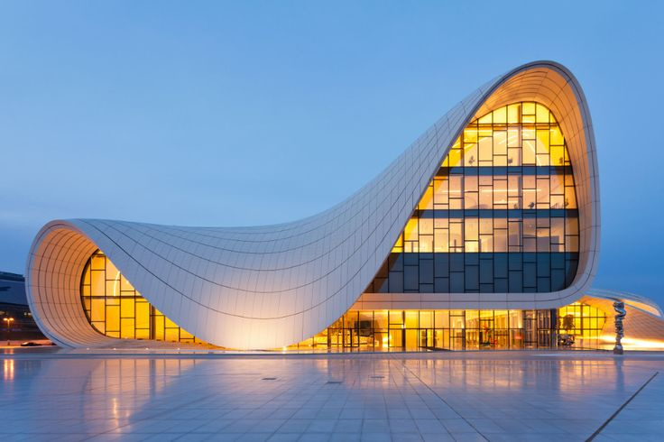

03 / Portfolio
Famous Projects

Heydar Aliyev Center
Baku, Azerbaijan — famous for its smooth, flowing curves and futuristic form.

London Aquatics Centre
Designed for the 2012 Olympic Games, its roofline is inspired by the movement of water.

Guangzhou Opera House
One of China's most iconic cultural buildings, recognized for its bold geometric form.